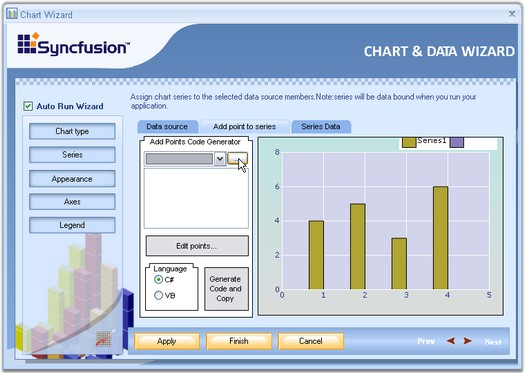
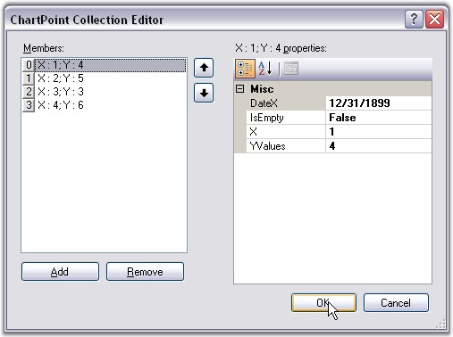
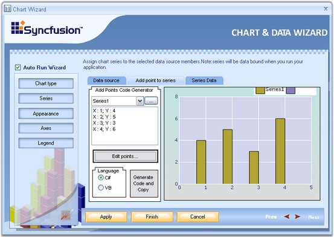

A Chart can display multiple series. Properties such as Name, Data source, Series Data can be set or changed for any of the series, easily, through this wizard.

Figure 25: Chart Wizard with Series Settings
Below are the three tabs in the Wizard for Series.
· Data source - The data source to connect with, can be selected using the data source page. Once the data source is selected, it will guide you through the connectivity steps.
· Add points to series:
1. Click the ellipse button to add a new series.
2. Add a Series with custom name and click ok. Now select the created series in the combo box and then click Edit Points.
3. In the ChartPoint Collection Editor, give the data point values. The below image illustrates this.

Figure 26: ChartPoint Collection Editor
4. Click Add to add points to the series. Give x and y values. Click Ok. Now the preview shows the chart rendered with the custom series points.

Figure 27: Chart rendered with Custom Series Points
· Series Data
Using this tab, we can change the type of the chart. Whenever an external data source is selected using the Data Source tab, x value and y value combo box will be supplied with all the column names of the external data source.
Select one column for x value and another for y value, between which you wanted to draw the chart.
See Also